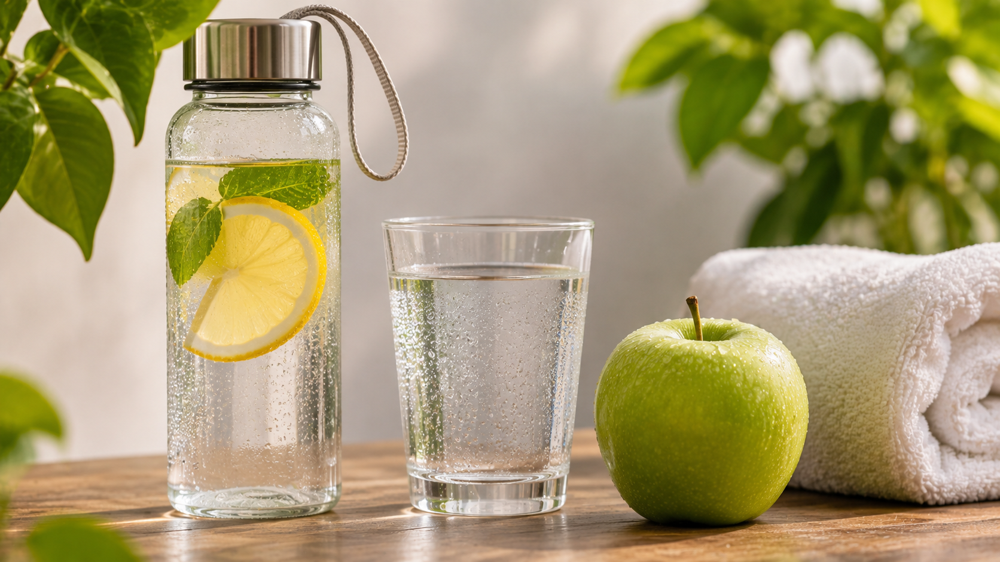

Comece pelo possível
Escolha uma mudança pequena que combine com seu momento atual.
Hábitos se constroem aos poucos. Começar com uma ação pequena e repetível pode ser mais simples do que tentar mudar a rotina inteira.

Escolha uma mudança pequena que combine com seu momento atual.
Um horário ou lembrete visual pode ajudar a dar espaço a uma pausa, uma caminhada ou um copo de água.
Conversar com alguém de confiança pode tornar novas rotinas mais agradáveis.